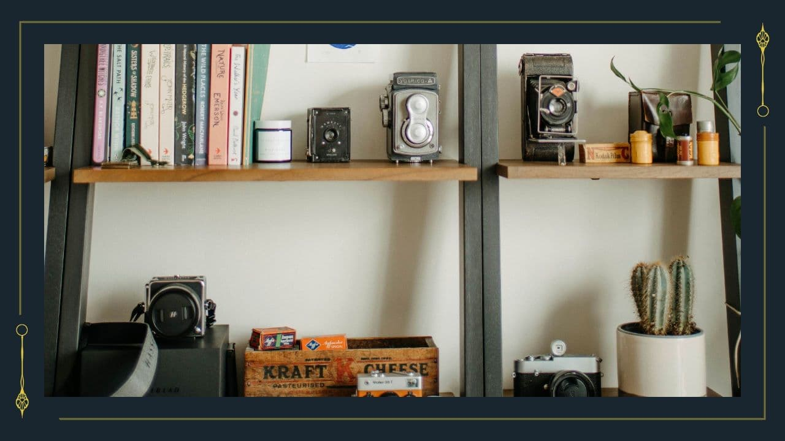

奥には扉を隠すようにカーテンでくくられた空間がある。きっとこの先に遺体があるのだろう。
※ここでは、調査が５回できる。（同じ調査対象者を複数回選ぶことも可能）
①遺体
→遺体1体につき、調査回数1回分
②棚と故人の手荷物の確認
→手荷物1人分につき、調査回数1回分
→棚（手荷物除く）確認、調査回数1回分
遺体を確認する場合
【扉のアイコン】をクリック
棚の内容を確認する場合
【探索のアイコン】をクリック
調査回数に注意して調査を実施してください

遺体を確認する
そこにあったのは、横たわる４つの遺体だ。それぞれ布で覆われている。
１度の探索時間では、５回調査が可能です。
（同じ調査対象を選び技能ロールを再度ふることも可能、その場合は、調査回数を＋１してください）
※荷物についても調査回数は合算されますのでご注意ください。
遺体1体につき、調査回数1回分
もしも途中で荷物を調べに行く場合
【荷物】をクリック
市川遺体
あなたたちは、市川睦月の遺体を見ることにした。布を取ると、あなたたちはその遺体の状況に驚くことだろう。首が折れネジ曲がり前後が逆になっている。さらに驚いたことに、彼の遺体には他の外傷が見当たらない。遺体を見ると市川は背が高い男性だ。体型も標準的で何かの身体的障害も見当たらないため抵抗するには十分に力があったはずだ。首を反対にするほどのことは人間の力で可能なのだろうか。何か道具を使ったのか。
＜正気度ロール 1/1d4＞
探索可能箇所には【探索のアイコン】がある。
市川睦月 30代前半 背が高く中肉中背
日焼けなどはしていないことから内勤の仕事をしているようだ。
【探索のアイコン】＊市川の首＊ 成功したらクリック
【探索のアイコン】＊市川の爪＊ 詳しく見る
【探索のアイコン】＊市川の服＊ 詳しく見る
二戸遺体
あなたたちは、二戸仁の遺体を見ることにした。布を取ると、あなたたちはその遺体の状況に驚くことだろう。目玉が何かでえぐられている。身体には無数の刃物による傷が見られる。死因は出血死、またはショック死かもしれない。夥しい血が流れたのだろう。顔周りや服に血が至る所にこびりついている。
＜正気度ロール 1/1d4＞
探索可能箇所には【探索のアイコン】がある。
二戸仁 20代前半のように見えるが遺体の状況により不明。
【探索のアイコン】＊体の傷＊ 成功したらクリック
【探索のアイコン】＊二戸の服＊ 詳しく見る
遺体をみて思うことがある 【HO：解き明かすもの】のみクリック可能
遺体をみて思うことがある 【HO：支え繋ぐもの】のみ成功したらクリック可能
生三遺体
あなたたちは、生三宮の遺体を見ることにした。布を取ると、30代前半の優しそうな男性がいた。遺体の状況から何かしらのアレルギー反応を起こしたのではと推測ができる。
＜正気度ロール 1/1d2＞
【探索のアイコン】＊生三の遺体＊ 詳しく見る
【探索のアイコン】＊生三の服＊ 詳しく見る
詩志麻遺体
あなたたちは、詩志麻司馬の遺体を見ることにした。布を取ると、昨日まで元気そうに講釈を垂れていた詩志麻がいた。遺体の状況から首を吊ったと推測ができる。
＜正気度ロール 1/1d4＞
【探索のアイコン】＊詩志麻の首＊ 成功したらクリック
【探索のアイコン】＊詩志麻の服＊ 詳しく見る
【探索のアイコン】＊詩志麻の身体＊ 詳しく見る
三田遺体
あなたたちは、三田満美の遺体を見ることにした。布を取ると、そこには苦し気に濁った目を見開く三田の姿があった。
＜正気度ロール 1/1d4＞
【探索のアイコン】＊三田の身体＊ 成功したらクリック
【探索のアイコン】＊三田の服＊ 詳しく見る
【成功アイコン】 指示があった場合のみクリック
御膳遺体
あなたたちは、御膳檎檎の遺体を見ることにした。布を取ると、穏やかに眠る御膳がいた。まるで死んでいないようにも見える。
＜正気度ロール 1/1d4＞
【探索のアイコン】＊御膳の顔＊ 成功したらクリック
【探索のアイコン】＊御膳の服＊ 詳しく見る
【探索のアイコン】＊写真＊ 詳しく見る
荷物を確認する
棚にはいくつか日用品の予備などがある。１度の探索時間では、５回調査が可能です。
（同じ調査対象を選び技能ロールを再度ふることも可能、その場合は、調査回数を＋１してください）
※遺体についても調査回数は合算されますのでご注意ください。
棚と故人の手荷物の確認
※手荷物1人分につき、調査回数1回分
※棚（手荷物除く）確認、調査回数1回分
【棚の中】(日用品の予備などが入っているが特に気になるものはない。) 成功したらクリック
倉庫を見渡す気づく 【HO：支え繋ぐもの】のみクリック可能
もしも途中で遺体を調べに行く場合
【遺体】をクリック
市川の荷物
九重の文字だろうか。市川と書かれたメモとともに鞄が置かれている。中身は最低限のものしかなく、ビジネスの出張のような印象を受ける。探索可能箇所には【探索のアイコン】がある。
【探索のアイコン】＊市川の荷物①＊ 成功したらクリック
【探索のアイコン】＊市川の荷物②＊ 詳しく見る
【探索のアイコン】＊市川の荷物③＊ 成功したらクリック
二戸の荷物
九重の文字だろうか。二戸と書かれたメモとともに鞄が置かれている。中身は学生らしい荷物だが一部気になるものがある。
【探索のアイコン】＊二戸の荷物①＊ 成功したらクリック
【探索のアイコン】＊二戸の荷物②＊ 詳しく見る
生三の荷物
あなたたちは、生三宮の遺体を見ることにした。布を取ると、30代前半の優しそうな男性がいた。遺体の状況から何かしらのアレルギー反応を起こしたのではと推測ができる。
＜正気度ロール 1/1d2＞
【探索のアイコン】＊生三の荷物①＊ （エピペン）成功したらクリック
【探索のアイコン】＊生三の荷物②＊ 詳しく見る
